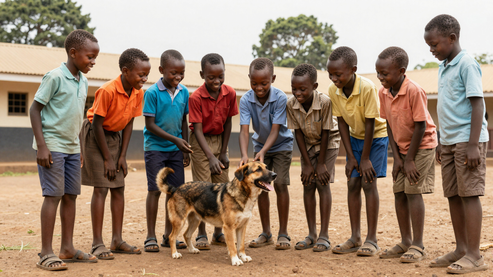
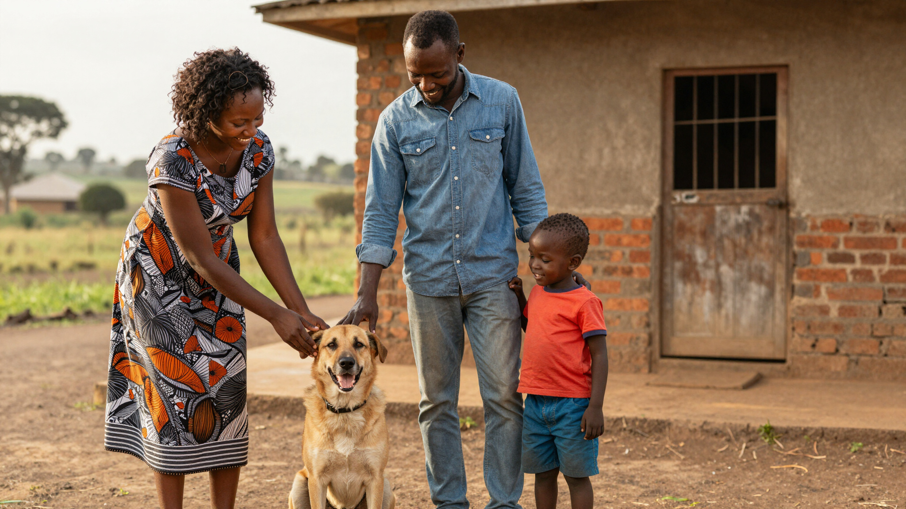
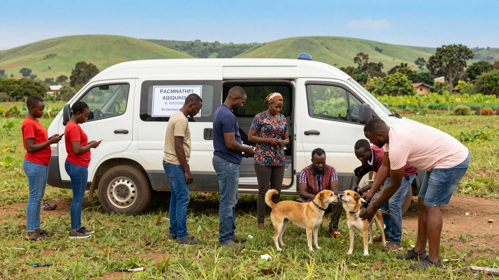
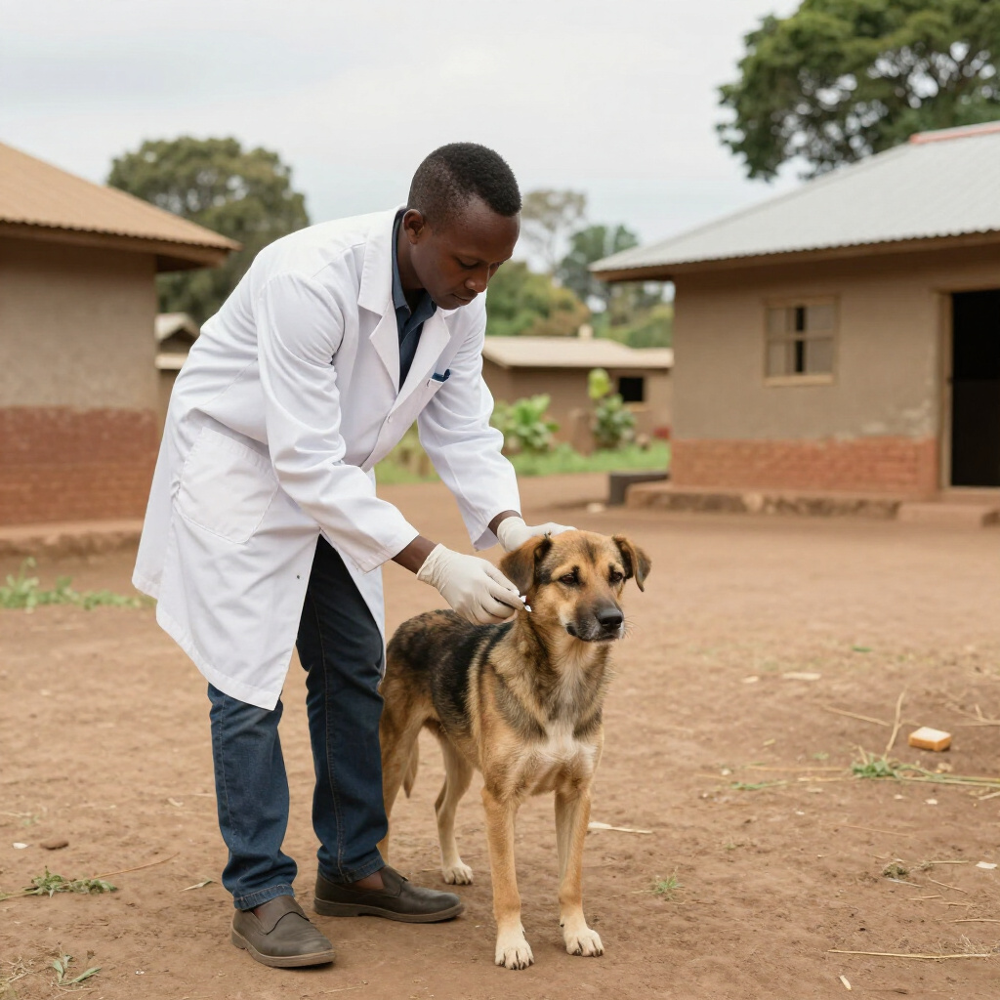
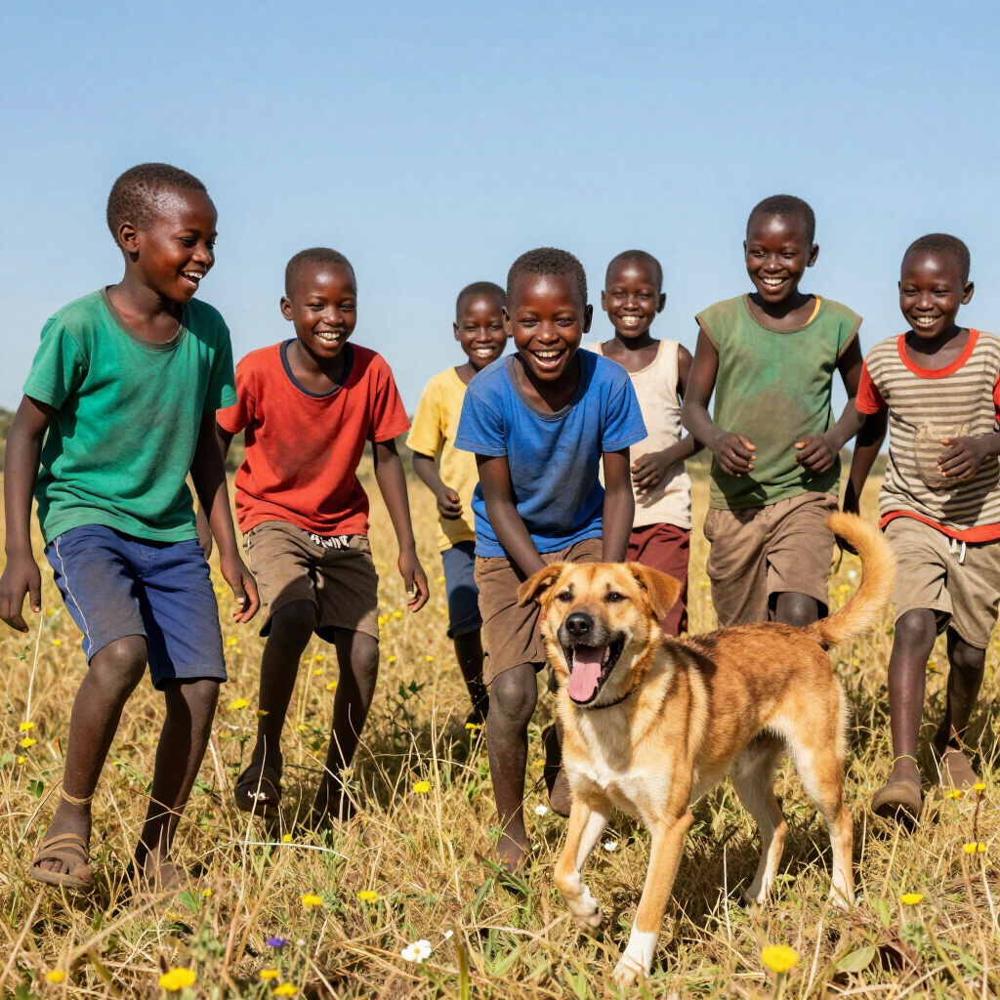

The Nairobi School Drive
Students at a suburban primary school received essential safety education and vaccinations for their community pets, fostering a new culture of compassion and protection.
ToCAWI Initiative runs rabies vaccination campaigns, humane population control, and education programs. This page provides a transparent record of our work, showcasing real campaigns, verified metrics, and life-changing stories from communities across Kenya.
From Nairobi to rural Kiambu, we have protected over 15,000 animals. Explore our statistical proof of work and the success stories that fuel our mission.


Students at a suburban primary school received essential safety education and vaccinations for their community pets, fostering a new culture of compassion and protection.

In Kiambu, we transitioned a high-risk area into a safe zone. Local families shared how our door-to-door vaccination campaigns brought peace of mind and eliminated the fear of rabies.

Our mobile units reached the deepest parts of rural Kenya, vaccinating hundreds of animals in a single week and proving that even the most remote areas can be rabies-free.

Following a concentrated 18-month vaccination drive in the Kiambu region, ToCAWI reached 70% coverage. Local health facilities reported a 40% decrease in bite incidents as the community learned safe interaction protocols and dogs gained critical immunity.
By focusing on Machakos' rural edges, our mobile clinics achieve record-high vaccination rates. This initiative successfully interrupted the virus transmission cycle, resulting in twelve consecutive months of zero rabies reports in the targeted primary districts.

“The rabies vaccination campaigns in Kiambu have transformed how we handle community safety. No child should have to fear a dog bite, and ToCAWI's work is making that a reality for us every single day.”Community Health Worker, Kiambu
“Our school partnership with ToCAWI has been transformative. Through their education programs, our students have learned compassion and critical safety protocols that protect them and their pets alike.”School Principal, Nairobi District
“ToCAWI's commitment to humane dog population control is truly unparalleled. Their data-driven approach is setting a sustainable standard for animal welfare and public health across Kenya.”Veterinary Volunteer, Machakos